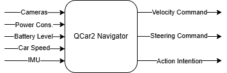
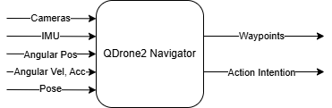
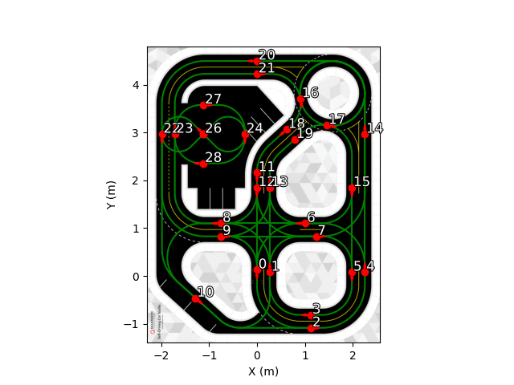
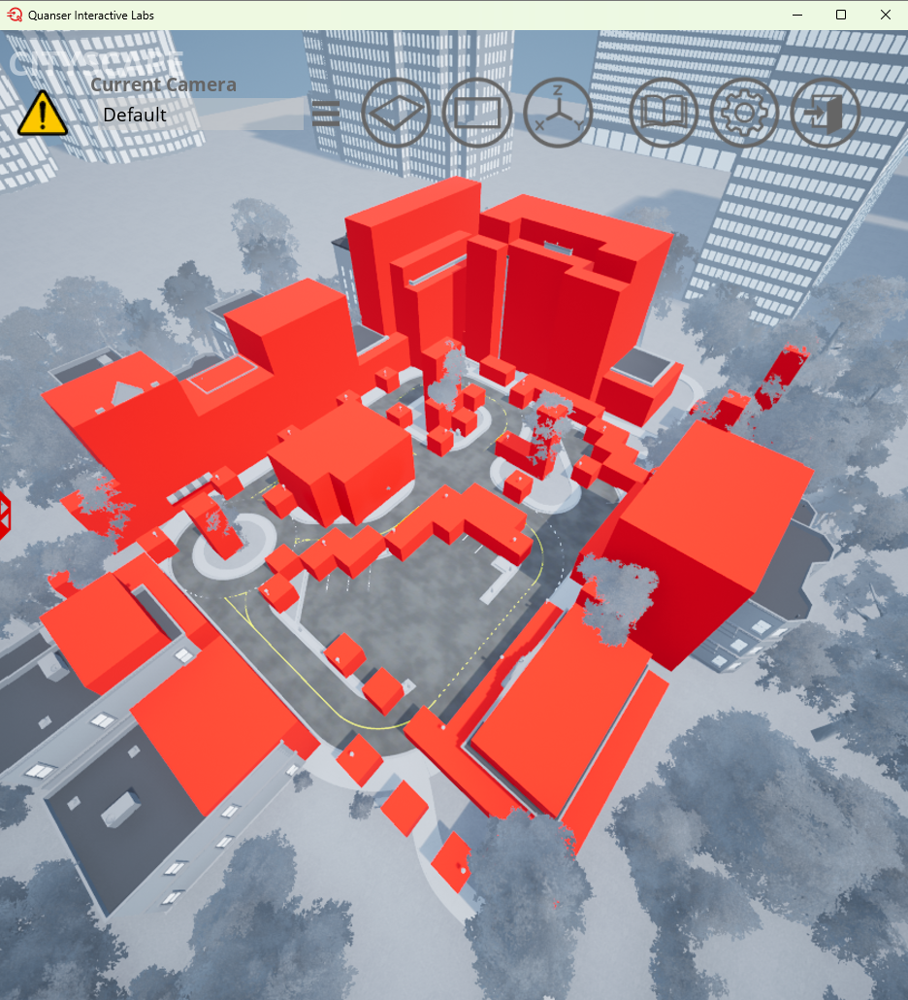
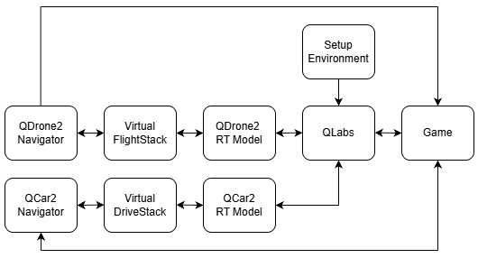

Operational Guide
This guide explains the simulation environment, scenario rule implementation, and the development of a multimodal autonomous delivery solution within the simulation environment. Teams may choose either Python or MATLAB/Simulink for development.
You can follow steps below for partcipating in this competition.
- Preparation: Complete registration process and system and software setup, open QLabs, and load the cityscape map.
- Automated Startup: As an initial exercise, pick up your first packages with QDrone2 and QCar2 using the example implementation in the SMC AICA 2026 Competition Files Package.
- Navigator Files: Develop/modify QCar2 and QDrone2 Navigator files to begin developing your own autonomous delivery solutions.
- Additional Information for Advanced Development: Understand the simulation environment details and modify the vehicle spawn locations.
1) Preparation
Registration
- Register the team using the Registration Form.
- Register on the Quanser Academic Portal using the same email address provided in the registration form. QLabs licenses will be assigned to each team member’s email address within 2–3 business days. Team members can check their license status by logging in to their Quanser portal account. If the license is not available within 3 business days, contact the competition organizers.
System and Software Setup
For setup details, see the System and Software Setup
Before running the system, make sure:
- your system meets the competition hardware requirements,
- all required software is installed,
- all competition files are placed in the correct folder,
- the software setup steps are completed.
Open QLabs and Load the Cityscape Map
- Open Quanser Interactive Labs (QLabs) from the Windows Start menu, or go to
C:\Program Files\Quanser\Quanser Interactive Labsand run the application. - Log in to QLabs with the account used to register on the Quanser Academic Portal.
- In QLabs, open Self-Driving Car Studio.
- Select the Cityscape map.
- Wait until the Cityscape environment finishes loading completely.
- After the map is open, continue with
run_all.BATorrun_all.m.
2) Automated Startup
A batch file (run_all.bat) is provided to start the simulation for Python-based Navigator implementations, while a MATLAB script (run_all.m) is provided for Simulink-based Navigator implementations.
Python Workflow
The batch file can be executed from a command window as follows:
Run:
run_all.bat
This script automatically:
- Runs the setup environment (
setup_env.py) - Starts the autonomy stacks (
Virtual_DriveStack.rt-win64,Virtual_FlightStack.rt-win64) - Starts the game (
game.py) - Launches the Python-based Navigators (
QCar2_Navigator.py,QDrone2_Navigator.py)
To pick up the first packages:
- Type
task1in QCar2_Navigator command window. It commands the QCar2 to drive to the Central Pickup location and pick up two small packages. - Type
task1in QDrone2_Navigator command window. It commands the QDrone2 to fly to the Central Pickup location and pick up one small package.
MATLAB / Simulink Workflow
The MATLAB script can be executed from the MATLAB command window as follows:
Run:
run_all.m
This script automatically:
- Runs the setup environment (
setup_env.py) - Starts the autonomy stacks (
Virtual_DriveStack.rt-win64,Virtual_FlightStack.rt-win64) - Starts the game (
game.py) - Launches the Simulink-based Navigators and runs them (
QCar2_Navigator.slx,QDrone2_Navigator.slx)
To pick up the first packages:
- Set Task_Constant to
1in QCar2_Navigator Simulink screen. It commands the QCar2 to drive to the Central Pickup location and pick up two small packages. - Set Task_Constant to
1in QDrone2_Navigator Simulink screen. It commands the QDrone2 to fly to the Central Pickup location and pick up one small package.
3) Navigator Files
3.1 QCar2 Navigator
The QCar2 Navigator is the high-level controller responsible for decision-making and motion planning of the QCar2. Its inputs and outputs are illustrated in Figure 1.

To execute a delivery plan, the QCar2 Navigator must generate appropriate velocity and steering commands and publish the correct action intentions at each stage of the mission.
Velocity and steering commands can be generated by a low-level controller implementation or assigning a manual control keys. Sensor data can be used to support command generation and action intention decisions. The QCar2 Navigator has access to camera streams (disabled by default and can be enabled if needed) and sensor readings (Motor power consumption, battery level, car speed, IMU, and pose [x, y, yaw]).
3.2 QCar2 Communication Channels and Ports
QCar2 uses several fixed communication ports for:
- reading cameras, sensors, and sensor fusion outputs
- sending velocity and steering commands
- sending action intention
Ports to read cameras
| Camera | Address | Camera ID | Resolution | FPS |
|---|---|---|---|---|
| Right Camera | tcpip://localhost:18961 |
0@tcpip://localhost:18961 |
640 x 480 |
30 |
| Back Camera | tcpip://localhost:18962 |
1@tcpip://localhost:18962 |
640 x 480 |
30 |
| Front Camera | tcpip://localhost:18963 |
2@tcpip://localhost:18963 |
640 x 480 |
30 |
| Left Camera | tcpip://localhost:18964 |
3@tcpip://localhost:18964 |
640 x 480 |
30 |
Ports to read sensors and send velocity and steering commands
| Parameter | Value |
|---|---|
| Address | tcpip://localhost:18375 |
| Role | Client |
| Send Buffer Size | 1460 |
| Receive Buffer Shape | (1, 10) — float64 |
| Receive Buffer Size | 1460 |
Received Data Layout:
| Index | Description | Unit |
|---|---|---|
[0] |
Motor power consumption | W |
[1] |
Battery level | % |
[2] |
Car speed | m/s |
[3 4 5] |
Gyroscope data | rad/s |
[6 7 8] |
Accelerometer data | m/s² |
[9] |
Connection status flag | — |
Sent Data: Velocity and steering commands as [velocity, steering] vector
Port to read position and heading and to send action intention
| Parameter | Value |
|---|---|
| Address | tcpip://localhost:19000 |
| Role | Client |
| Send Buffer Size | 8 |
| Receive Buffer Shape | (1, 3) — float64 |
| Receive Buffer Size | 24 |
Received Data: Vehicle pose as [x, y, yaw]
Sent Data: QCar2 action intention value
3.3 QDrone2 Navigator
The QDrone2 Navigator is the high-level controller responsible for decision-making and motion planning of the QDrone2. Its inputs and outputs are illustrated in Figure 2.

To execute a delivery plan, the QDrone2 Navigator must generate appropriate waypoints and publish the correct action intentions at each stage of the mission.
Sensor data can be used to support waypoint generation and action intention decisions. The QDrone2 Navigator has access to camera streams (disabled by default and can be enabled if needed) and sensor readings (IMU, angular position, angular rates, angular acceleration, and pose).
3.4 QDrone2 Communication Channels and Ports
QDrone2 uses several fixed communication ports for:
- reading camera, sensors, and sensor fusion outputs
- sending waypoints
- sending action intention
Ports to Read Cameras
| Camera | Address | Camera ID | Resolution | FPS |
|---|---|---|---|---|
| RealSense RGB + Depth | tcpip://localhost:18986 |
0@tcpip://localhost:18986 |
640 x 480 (RGB + Depth) |
30 |
| Right Camera | tcpip://localhost:18982 |
0@tcpip://localhost:18982 |
640 x 480 |
30 |
| Back Camera | tcpip://localhost:18983 |
1@tcpip://localhost:18983 |
640 x 480 |
30 |
| Left Camera | tcpip://localhost:18984 |
2@tcpip://localhost:18984 |
640 x 480 |
30 |
| Downward Camera | tcpip://localhost:18985 |
3@tcpip://localhost:18985 |
640 x 480 |
30 |
The RealSense camera operates in RGB & DEPTH mode and provides both RGB and Depth streams on the same port.
Port to read sensors and send waypoints
| Parameter | Value |
|---|---|
| Address | tcpip://localhost:18373 |
| Role | Client |
| Send Buffer Size | 1460 |
| Receive Buffer Shape | (1, 20) — float64 |
| Receive Buffer Size | 1460 |
Received Data Layout:
| Index | Description | Unit |
|---|---|---|
[0] |
Stream connection flag | — |
[1 2 3] |
IMU gyroscope data | rad/s |
[4 5 6] |
IMU accelerometer data | m/s² |
[7 8 9] |
Estimated angular position | rad |
[10 11 12] |
Estimated angular rates | rad/s |
[13 14 15] |
Estimated angular acceleration | rad/s² |
[16 17 18 19] |
Pose — x, y, z, yaw | m, m, m, rad |
Sent Data: Waypoint as [x, y, z, yaw] vector.
Port to send action intenion
| Parameter | Value |
|---|---|
| Address | tcpip://127.0.0.1:19001 |
| Role | Client |
| Send Buffer Size | 8 |
| Receive Buffer Shape | (1, 1) — float64 |
| Receive Buffer Size | 24 |
Received Data: None.
Sent Data: QDrone2 action intention value.
Performance Note: Commenting out unnecessary video subsystems can improve runtime performance and reduce computing resource requirements.
3.5 Example QCar2 Navigator
An example QCar2 Navigator is provided to help you get started. You may modify it or use it as a baseline for your own implementation. It demonstrates autonomous driving using a Stanley controller. It enables the QCar2 to travel from a specified start node to a target node on the road network while maintaining a desired velocity and publishing appropriate action intentions.
To support this implementation, several tools are provided. In particular, a list stores feasible routes between all pairs of nodes, as illustrated in Figures 3 and 4. The route corresponding to the selected start and target nodes is retrieved from this list and provided to the Stanley controller.
Using this route information, the Stanley controller computes the required steering and velocity commands, allowing the QCar2 to follow the route and reach the target node autonomously.

Figure 3: Road network with node numbering in Python. Green curves show the routes. Central pickup is located at Node 24.
Figure 4: Road network with node numbering in MATLAB/Simulink. Green curves show the routes. Central pickup is located at Node 25.
Tools to support Example QCar2 Navigator
Sample tools are also provided in the tools\QCar2_PathPlanning\ folder, including:
| File Type | Python File | MATLAB / Simulink Equivalent |
|---|---|---|
| Route List | qcar2_paths.npy |
qcar2_paths.mat |
| Path Planning Script | paths2pathposes.py |
paths2pathposes.m |
| Pose Route List | qcar2_pathposes.npy |
qcar2_pathposes.mat |
| Roadmap Image | roadmap.png |
roadmap.png |
- Route List: These files store the all routes shown in Figures 3 and 4.
- Path Planning Script: It converts the routes (position) data into posed routes (position + heading) suitable for use with the Stanley controller. The converted routes are saved as
qcar2_pathposes.*file (.npy for Python and .mat for MATLAB).
3.6 Example QDrone2 Navigator
An example QDrone2 Navigator is provided to help you get started. You may modify it or use it as a baseline for your own implementation. It generates waypoints from a start location to a target location while avoiding obstacles. To regulate the motion of the QDrone2, these waypoints are time-parameterized to produce smooth velocity profiles.
To support this implementation, several tools are provided. In particular, an occupancy list defines whether regions in the environment are free or occupied by obstacles or buildings. Based on this information, a voxel map is constructed, as shown in Figure 5. A path-planning algorithm is then applied to this voxel map to generate waypoints from the start location to the target location. Finally, a first-order interpolation with a ramp-type profiler is used to time-parameterize the generated waypoints.

Figure 5: Voxel map of the Cityscape map.
Tools to support Example QDrone2 Navigator
Sample tools are also provided in the tools\QDrone_PathPlanning\ folder, including:
| File Type | Python File | MATLAB / Simulink Equivalent |
|---|---|---|
| Occupancy Grid | occupancy_grid.txt |
occupancy_grid.txt |
| Read Occupancy Grid | read_occupancy_grid.py |
read_occupancy_grid.m |
| Graph | city_voxel_map.npz |
city_voxel_map.mat |
| Path Planning Script | plan_path.py |
plan_path.m |
| Profiler | profile_ramp.py |
profile_ramp.m |
| Example | example.py |
example.m |
| Plans | qdrone2_plans.npz |
qdrone2_plans.mat |
- Occupancy Grid: This .txt file represents the city as a voxel map composed of 3 × 3 × 3 meter cubes. For each cube, the file specifies its location and whether it is occupied (1) or free space (0).
- Read Occupancy Grid: This script reads the .txt occupancy grid file and converts it into MATLAB- or Python-compatible matrices. It then saves the result as a graph representation in
city_voxel_map.*. - Path Planning Script: This script generates a waypoint path from a start location to an end location using Dijkstra’s algorithm on city_voxel_map.
- Profiler: This script time-parameterizes the waypoints generated by the Path Planning Script using a simple ramp profile.
- Example: This file demonstrates how to use the provided tools and saves the resulting plan as
qdrone2_plans.*.
4) Additional Information for Advanced Development
The scenario in the SMC AICA Challenge 2026 is simulated through the interaction of multiple application blocks operating together. These blocks and their interactions are illustrated in Figure 6.

Figure 6: System workflow block diagram for the SMC AICA 2026 Virtual Stage.
The roles of each application block are described below. Some application blocks may be modified, while others must not be modified.
- Quanser Interactive Labs (QLabs) application serves as the main simulation environment, where the required map is loaded, physical dynamics are simulated, and the scenario is visualized in 3D.
- The Setup Environment script (
setup_env.py) is executed once at the start to spawn vehicles, pickup and delivery location pads at the QLabs, and to load the corresponding real-time (RT) models for each vehicle. This script must not be modified. -
Initial vehicle positions and headings are defined in the Spawn Locations (
spawn_locations.txt), which can be modified to set custom spawn locations. -
The QDrone2 RT Model (
QDrone2_Open_Workspace.rt-win64) simulates the QDrone2’s sensors and actuators. The contents of this component are inaccessible to competitors and must not be modified. - The Virtual FlightStack (
virtual_FlightStack.rt-win64) executes low-level control, sensor fusion, and core flight functionalities. The contents of this component are inaccessible to competitors and must not be modified. - The QDrone2 Navigator acts as the high-level controller responsible for decision-making and motion planning of the QDrone2:
- Receives vehicle sensor data and sensor fusion outputs from the Virtual FlightStack,
- Sends waypoints to the Virtual FlightStack,
- Sends action intentions to Game (
game.py).
Competitors are required to develop the QDrone2 Navigator to generate appropriate waypoints and action intentions in accordance with the delivery strategy. Example implementations are provided in the Competition Files Package, including a Python version (QDrone2_Navigator.py) and a Simulink version (QDrone2_Navigator.slx).
- The QCar2 RT Model (
QCar2_Workspace.rt-win64) simulates the QCar2’s sensors and actuators. The contents of this component are inaccessible to competitors and must not be modified. - Virtual DriveStack (
virtual_DriveStack.rt-win64) executes sensor fusion and core driving functionalities. The contents of this component are inaccessible to competitors and must not be modified. - The QCar2 Navigator acts as the high-level controller responsible for decision-making and motion planning of the QCar2:
- Receives vehicle sensor data and sensor fusion outputs from the Virtual DriveStack,
- Sends velocity and steering commands to the Virtual DriveStack,
- Sends action intentions to Game (
game.py).
Competitors are required to develop the QCar2 Navigator to generate velocity and steering commands and set action intentions in accordance with the delivery strategy. Since the Virtual DriveStack does not include low-level controllers, participants may implement their own low-level controller or use manual control inputs for velocity and steering commands to support development. Example implementations are provided in the SMC AICA 2026 Competition Files Package, including a Python version (QCar2_Navigator.py) and a Simulink version (QCar2_Navigator.slx).
- The Game (
game.py) application block manages the scenario rules, handles pickup, vehicle-to-vehicle transfer, and drop-off operations, tracks scoring and mission time, and updates the score and mission time displayed in QLabs. This script must not be modified.
File Structure
2_SMC_AICA_2026_Competition_Files\
python\
game.py
setup_env.py
run_all.bat
spawn_locations.txt
QCar2_Navigator.py
QDrone2_Navigator.py
Virtual_DriveStack.rt-win64
Virtual_FlightStack.rt-win64
tools\
QCar2_PathPlanning\
paths2pathposes.py
qcar2_paths.npy
qcar2_pathposes.npy
roadmap.png
QDrone2_PathPlanning\
city_voxel_map.npz
occupancy_grid.txt
plan_path.py
profile_ramp.py
qdrone2_plans.npz
read_occupancy_grid.py
example.py
simulink\
game.py
setup_env.py
run_all.m
spawn_locations.txt
QDrone2_Navigator.slx
QCar2_Navigator.slx
Virtual_DriveStack.rt-win64
Virtual_FlightStack.rt-win64
tools\
QDrone2_PathPlanning\
city_voxel_map.mat
occupancy_grid.txt
plan_path.m
profile_ramp.m
qdrone2_plans.mat
read_occupancy_grid.py
example.m
QCar2_PathPlanning\
paths2pathposes.m
qcar2_paths.mat
qcar2_pathposes.mat
roadmap.png